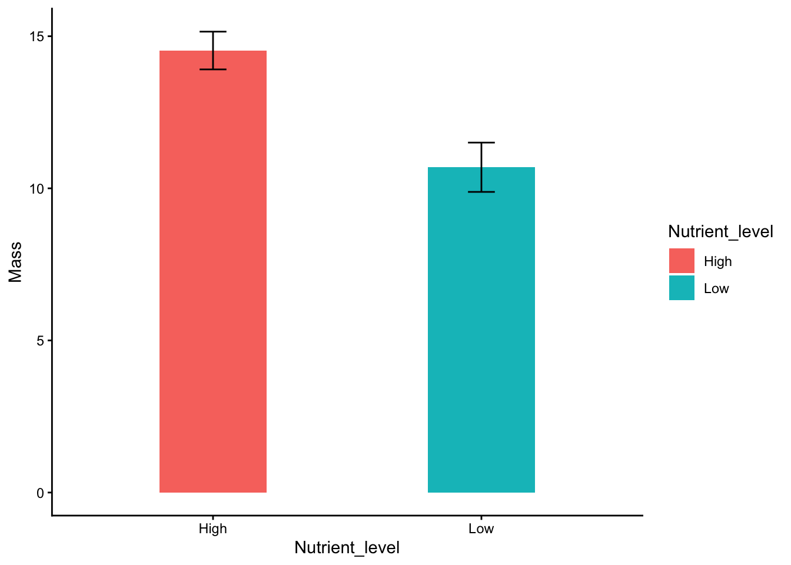
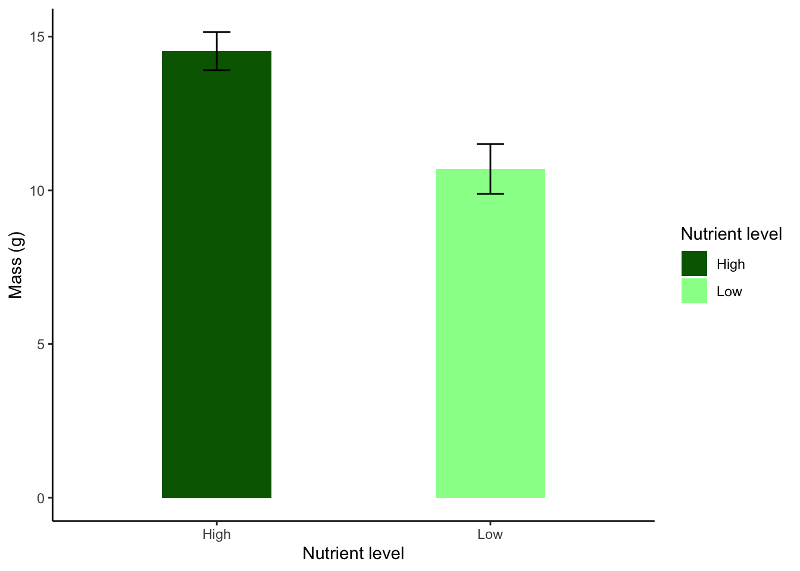

Code
nutrientdata <- read.table("data/experiment_nutrients.txt",
header=T,
sep="\t",
dec=",") Ett t-test (kallas även Student´s t-test) används när man är intresserad om huruvida två grupper av en faktor skiljer sig åt i medelvärde. Om man har fler än två grupper, eller har flera faktorer, använder man sig istället av Anova, vilket vi kommer använda oss av senare under kursen.
Ett t-test förutsätter följande
Vi vill undersöka om växtbiomassan i ett antal odlingskrukor skiljer sig beroende på om de fått hög eller låg näring.
Ladda ner följande fil experiment_nutrients.txt (högerklicka, välj “spara länk som”) och spara filen på din hårddisk i en mapp med ett lämpligt namn.
Fortsätt med att läsa in datasetet och ge det ett namn, i det här fallet kallar vi det nutrientdata. En detalerad beskrivning i hur man läser in filer finns i vår tidigare tutorial Läsa in data i R.
<- betyder att vi sparar resultatet av funktionen (i det här fallet read.table() i ett objekt. Pilen pekar på objektet, och vi ger objektet ett namn, i det här fallet nutrientdata.
read.table är kommandot för att läsa in textfiler med ändelsen .txt
"data/experiment_nutrients.txt" är sökvägen till platsen där datafilen är sparad på din dator(data/), samt namnet på filen (experiment_nutrients.txt).
header=Tbetyder att första raden i filen är kolumnernas rubriker, dvs inte värden.
sep=T betyder att alla värden är separerade med TAB.
dec="," betyder att komma används som decimalavgränsare (ex. 1,32).
Börja med att titta på datans struktur med str().
'data.frame': 20 obs. of 2 variables:
$ Nutrient_level: chr "High" "High" "High" "High" ...
$ Mass : num 15.5 11.7 15.9 13.7 13.2 ...$ Nutrient_level: chr betyder att värderna i kolumnen Nutrient_level är karaktärer dvs text och inte siffror.
$ Mass: num betyder att värderna i kolumnen Mass är decimaltal
Om du har en kolumn som innehåller decimaltal skall det stå num. Om det istället står chr betyder det att datat har punkt som decimalavgränsare, medan du läste in det med komma som avgränsare (eller tvärtom) och R tror att det är text. Justera koden och läs in datat på nytt (se vår tidigare tutorial Läsa in data i R för justerad kod).
Visa sedan de fem första raderna av ditt dataset med head() för att se att allt ser korrekt ut
Vi gör en enkel graf med boxplot()
Den grå boxen innehåller de mittersta 50% av värderna i gruppen, och den horisontella linjen i mitten visar medianvärdet. Felstaplarna visar området som de 25% lägsta och 25% högsta värderna ligger i.
Observera: en boxplot är INTE ett statistiskt test, och det motsvarar inte medelvärden och varians/standard error. Använd det enbart för snabb inspektion av data, inte för publicering. Vi går igenom hur man gör en publiceringsduglig graf i den avslutande delen av vår tutorial, under Publiceringsduglig figur
Hur tolkar du grafen? Ser det ut som att växtbiomassan skiljer sig åt beroende på näring?
Vi vill nu göra ett t-test för att undersöka om vår responsvariabel (beroende variabel) Mass beror av vår förklarande variabel (oberoende variabel) Nutrient_level, med andra ord om biomassan beror av näringstillgången.
Vi specificerar en modell med hjälp av funktionen t.test() och väljer att spara resultatet i ett objekt som vi kallar m.garden. Jag föredrar att alla mina modeller (resultat av statistka test) har ett namn som börjar med m. för att jag skall veta vad som är dataset och vad som är modeller. Ge alltid dina modeller beskrivande namn.
I vår modell har vi vår responsvariabel (det vi har på y-axeln) till vänster om tilde-tecknet ~ och vår förklarande variabel till höger. data=nutrientdata betyder att vi använder oss av datasetet vi tidigare döpt till nutrientdata.
Vi tittar på resultatet genom att skriva in modellens namn och köra den
Welch Two Sample t-test
data: Mass by Nutrient_level
t = 3.7581, df = 16.853, p-value = 0.001588
alternative hypothesis: true difference in means between group High and group Low is not equal to 0
95 percent confidence interval:
1.681385 5.992311
sample estimates:
mean in group High mean in group Low
14.53003 10.69318 Vi kan nu inspektera resultatet. Vi får teststatistika (t-värde) samt frihetsgrader (df) och ett p-värde.
Eftersom vårt p-värde är mindre än 0.05 säger vi att biomassan skiljer sig signifikant mellan de två näringsbehandlingarna Vi ser att medelvärdet i grupp High är högre än i grupp Low. Stämmer det om du tittar på din boxplot?
Växtbiomassan är större i hög näring än i låg näring (t-test, t = 3.758, d.f. = 16.9, p = 0.002).
Var modellen lämplig att använda för ditt dataset?
Vi utvärderar modellen genom diagnostiska grafer
Normal Q-Q visar om residualerna är normalfördelade. De bör följa en tänkt diagonal linje från nedre vänster hörn till övre höger hörn. Om de avviker på ett systematiskt sätt är residualerna inte perfekt normalfördelade, och vi kan behöva förändra modellen, exempelvis genom att transformera data eller använda ett annat typ av test.
Vi avslutar med att göra en publiceringsduglig figur, och använder oss av paketet ggplot2. Om du inte sedan tidigare har paketet installerat så gör du det med koden install.packages("ggplot2"). Innan du använder paketet behöver du läsa in det i din session i R genom funktionen library()

Vi går nu igenom koden för vår plot. Den är utspridd över flera rader, där varje rad avslutas med ett + för att R skall förstå att koden fortsätter på nästa rad.
ggplot(nutrientdata,aes(x = Nutrient_level, y = Mass, fill = Nutrient_level)) + betyder att vi använder oss av funktionen ggplot(), och det första vi anger är namnet på vårt dataset, som vi kallade nutrientdata.
aes() är en funktion inom ggplot, här anger vi estetiken (aes står för aestetics). Vi anger namnet på de variabler som skall vara på x-axeln respektive y-axeln med x = Nutrient_level, y = Mass och eftersom vi vill att de olika nivåerna av vår faktor på x-axeln skall få olika färg lägger vi till fill = Nutrient_level.
stat_summary(geom = "bar",fun = mean,width = 0.4) + betuder att vi vill beräkna summarisk statistik från vårt dataset och visa det med hjälp av funktionen stat_summary(). geom = "bar" betyder att vi vill göra ett stapeldiagram ("bar" står för barplot). fun = mean betyder att staplarna skall baseras på medelvärdet, och width = 0.4 betyder att de skall ha en relativ bredd på 0.4 (testa att ändra, men för breda staplar ser ofta fult ut)
stat_summary(geom = "errorbar",fun.data = mean_se,width = 0.1) + Den här raden är också en stat_summary(), men här lägger vi till ett annat element till grafen. geom = "errorbar" betyder att vi nu vill lägga till felstaplar (errorbars),fun.data = mean_se betyder att felstaplarna skall representera standard error och vi anger deras bredd med width = 0.1, Felstaplar bör vara smalare än staplarna.
theme_classic() är ett tema för grafer. Det är det temat som gör att graferna ser ut så som vi förväntar oss i naturvetenskapliga publikationer (vit bakgrund, inga stödlinjer, ren design). Notera att det är sista raden i vårt script, så den skall inte avslutas med plustecken.
Vår enkla figur där vi enbart anger dataset och våra variablar blev ju inte alls tokig, men vi kan förbättra den. Vi skulle vilja fixa till följande:
Vi vill att det skall stå Nutrient level och inte Nutrient_level på x-axeln, fixas med xlab()
Vi vill ange att massan är mätt i gram, fixas med ylab()
Vi vill välja andra färger, och dessutom skall det inte stå Nutrient_level i vår legend. Fixas med scale_fill_manual()
library(ggplot2)
plot.nutrient <- ggplot(nutrientdata,aes(x = Nutrient_level, y = Mass, fill = Nutrient_level)) +
stat_summary(geom = "bar",fun = mean,width = 0.4) +
stat_summary(geom = "errorbar",fun.data = mean_se,width = 0.1) +
xlab("Nutrient level")+
ylab("Mass (g)")+
scale_fill_manual(name = "Nutrient level",values = c("High" = "darkgreen", "Low" = "palegreen"))+
theme_classic()
plot.nutrient
Om du vill se en lista med namn på alla färger som R innehåller så kör du koden colors(). Om du vill ha en specifik färg (och vet vad du gör) så kan du även ta fram färgens hexidecimala kod i ett bildbehandlingsprogram och ange den istället.